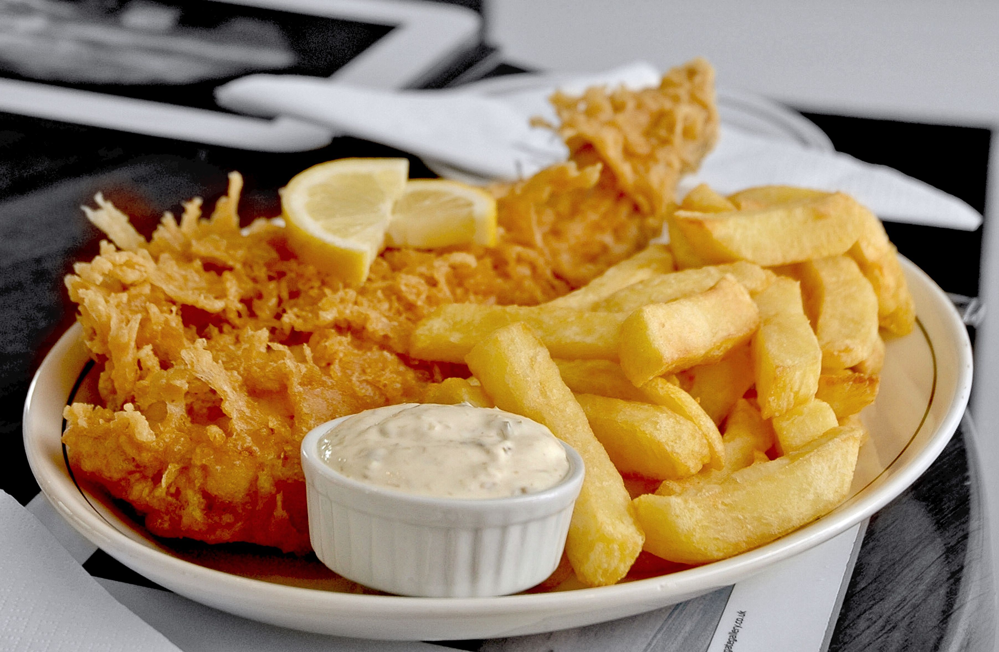
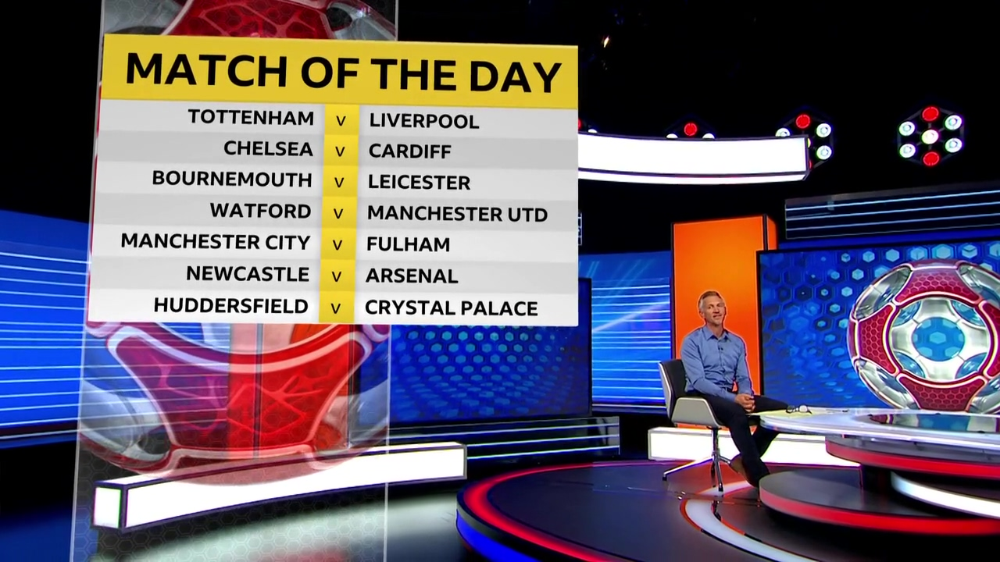

Английские футбольные традиции
Когда английские футбольные фанаты перестали безумствовать на британских стадионах, на матчи стали ходить добропорядочные люди, которым раньше приходилось смотреть футбол только по телевизору дома или в пабах. Сейчас на стадионы приходят семьи с детьми, молодежь и пожилые люди. В целом британцы чаще ходят на футбольные матчи, чем в театр.
Заядлые болельщики обязательно приходят на матчи в шарфах с эмблемами любимого клуба. Самые активные фанаты выбирают какую-нибудь экстравагантную одежду – например, рыцарские доспехи. Так поступают только добропорядочные болельщики, которые не принадлежат к движению футбольных хулиганов. Представители подпольной субкультуры же стараются одеться незаметно и редко используют футбольную символику, чтобы не привлекать к себе внимания.
На стадионе продают национальное блюдо Англии – fish and chips: картофель и рыбу, зажаренных во фритюре. Этот английский фастфуд принято есть горячим, пока идет матч. И вообще на стадионе принято много есть: и пока матч не начался, и во время игры. Кроме рыбы и картошки фри, можно купить мясные пироги, чипсы, пирожки и многое другое. И, конечно, не обходится без пива – это традиционный напиток на футбольных матчах.
У британцев с футболом тесно ассоциируются азартные игры. Букмекерские конторы существуют в основном за счет ставок на футбол. Каждый матч сопровождается ставками – ни в одной другой стране мира эта традиция так не распространена. Многие английские болельщики привыкли зарабатывать на играх.
В Великобритании есть традиция проводить футбольные матчи на следующий день после Рождества – так называемый Boxing Day. Для англичан это самый популярный матч года, который собирает на трибунах самое большое количество болельщиков вне зависимости от команд, которые принимают участие.
У этой традиции простая история. В домах аристократов слугам приходилось работать на Рождество, чтобы обслуживать гостей в праздник. На следующий день хозяева отпускали их домой, чтобы они могли провести время вместе с семьей. Для многих людей выходной в Boxing Day был единственной возможностью сходить на футбольный матч или сводить на него детей.
Сегодня на матчи в Boxing Day ходят семьями и большими компаниями. Во время послерождественских игр царит непередаваемая атмосфера: смесь праздника, ажиотажа, азарта и восторга. Помимо стандартного фастфуда на стадионе продают много сладостей. В программках матча футболисты одеты в костюмы Санта-Клауса. Причем не только болельщики, но и футболисты серьезно относятся к этой игре: выкладываются на полную.
Дома после матчей многие англичане смотрят программу BBC под названием Match of the day. Обычно ее показывают на канале BBC One каждую субботу по вечерам во время футбольных сезонов. В программе обсуждаются самые важные события последних матчей.
